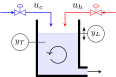
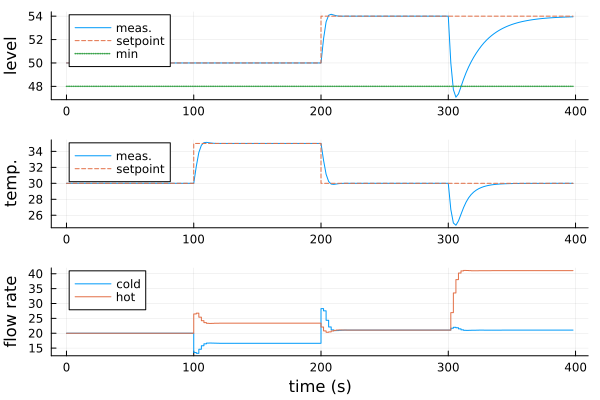
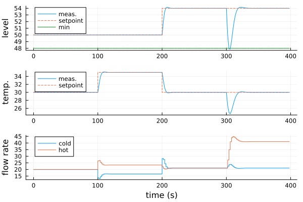
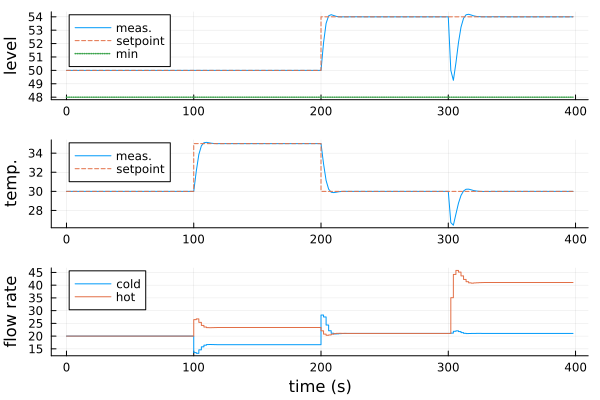
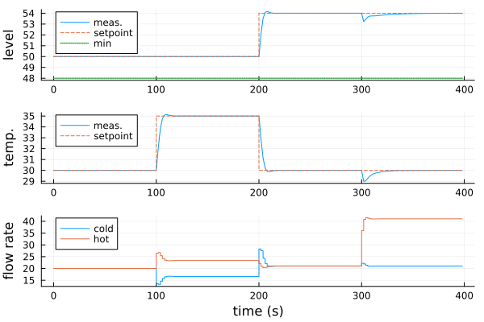

Manual: Linear Design
Linear Model
The example considers a continuously stirred-tank reactor (CSTR) with a cold and hot water inlet as a plant. The water flows out of an opening at the bottom of the tank. The manipulated inputs are the cold $u_c$ and hot $u_h$ water flow rates, and the measured outputs are the liquid level $y_L$ and temperature $y_T$:
\[\begin{aligned} \mathbf{u} &= \begin{bmatrix} u_c \\ u_h \end{bmatrix} \\ \mathbf{y} &= \begin{bmatrix} y_L \\ y_T \end{bmatrix} \end{aligned}\]
The following figure depicts the instrumentation installed on the CSTR:

At the steady-state operating points:
\[\begin{aligned} \mathbf{u_{op}} &= \begin{bmatrix} 20 \\ 20 \end{bmatrix} \\ \mathbf{y_{op}} &= \begin{bmatrix} 50 \\ 30 \end{bmatrix} \end{aligned}\]
the following linear model accurately describes the plant dynamics:
\[\mathbf{G}(s) = \frac{\mathbf{y}(s)}{\mathbf{u}(s)} = \begin{bmatrix} \frac{1.90}{18s + 1} & \frac{1.90}{18s + 1} \\[3pt] \frac{-0.74}{8s + 1} & \frac{0.74}{8s + 1} \end{bmatrix}\]
We first need to construct a LinModel objet with setop! to handle the operating points:
using ModelPredictiveControl, ControlSystemsBase
G = [ tf(1.90, [18, 1]) tf(1.90, [18, 1]);
tf(-0.74,[8, 1]) tf(0.74, [8, 1]) ]
Ts = 2.0
model = setop!(LinModel(G, Ts), uop=[20, 20], yop=[50, 30])LinModel with a sample time Ts = 2.0 s:
└ dimensions:
├ 2 manipulated inputs u
├ 2 states x
├ 2 outputs y
└ 0 measured disturbances dThe model object will be used for two purposes : to construct our controller, and as a plant simulator to test the design. Its sampling time is 2 s thus the control period will be 2 s as well.
Linear Model Predictive Controller
A linear model predictive controller (MPC) will control both the water level $y_L$ and temperature $y_T$ in the tank. The tank level should also never fall below 48:
\[y_L ≥ 48\]
We design our LinMPC controllers by including the linear level constraint with setconstraint! (±Inf values should be used when there is no bound):
mpc = LinMPC(model, Hp=10, Hc=2, Mwt=[1, 1], Nwt=[0.1, 0.1])
mpc = setconstraint!(mpc, ymin=[48, -Inf])LinMPC controller with a sample time Ts = 2.0 s:
├ estimator: SteadyKalmanFilter
├ model: LinModel
├ optimizer: OSQP
├ transcription: SingleShooting
└ dimensions:
├ 10 prediction steps Hp
├ 2 control steps Hc
├ 1 slack variable ϵ (control constraints)
├ 2 manipulated inputs u (0 integrating states)
├ 4 estimated states x̂
├ 2 measured outputs ym (2 integrating states)
├ 0 unmeasured outputs yu
└ 0 measured disturbances din which Hp and Hc keyword arguments are respectively the predictive and control horizons, and Mwt and Nwt, the output setpoint tracking and move suppression weights. By default, LinMPC controllers use OSQP and a direct SingleShooting transcription method to solve the optimal control problem, soft constraints on output predictions $\mathbf{ŷ}$ to ensure feasibility, and a SteadyKalmanFilter to estimate the plant states[1]. An attentive reader will also notice that the Kalman filter estimates two additional states compared to the plant model. These are the integrating states for the unmeasured plant disturbances, and they are automatically added to the model outputs by default if observability is preserved (see SteadyKalmanFilter for details).
Before closing the loop, the actual plant input $\mathbf{u}$ and measurement $\mathbf{y}$ should initialize the estimates $\mathbf{x̂}$ at the steady-state solution that leads to $\mathbf{ŷ}(0) = \mathbf{y}(0)$. This approach results in a bumpless transfer. The initstate! function finds this solution for LinModel. Since model simulates our plant here, its output will initialize the states. LinModel objects are callable for this purpose (an alias for evaloutput):
u, y = model.uop, model() # or equivalently : y = evaloutput(model)
initstate!(mpc, u, y)We can then close the loop and test mpc performance on the simulator by imposing step changes on output setpoints $\mathbf{r_y}$ and on a load disturbance $u_l$:
function test_mpc(mpc, model)
N = 200
ry, ul = [50, 30], 0
u_data, y_data, ry_data = zeros(model.nu, N), zeros(model.ny, N), zeros(model.ny, N)
for i = 1:N
i == 51 && (ry = [50, 35])
i == 101 && (ry = [54, 30])
i == 151 && (ul = -20)
y = model() # simulated measurements
preparestate!(mpc, y) # prepare mpc state estimate for current iteration
u = mpc(ry) # or equivalently : u = moveinput!(mpc, ry)
u_data[:,i], y_data[:,i], ry_data[:,i] = u, y, ry
updatestate!(mpc, u, y) # update mpc state estimate for next iteration
updatestate!(model, u + [0; ul]) # update simulator with load disturbance
end
return u_data, y_data, ry_data
end
u_data, y_data, ry_data = test_mpc(mpc, model)
t_data = Ts*(0:(size(y_data,2)-1))The LinMPC objects are also callable as an alternative syntax for moveinput!. It is worth mentioning that additional information like the optimal output predictions $\mathbf{Ŷ}$ can be retrieved by calling getinfo after solving the problem. Also, calling preparestate! on the mpc object prepares the estimates for the current control period, and updatestate! updates them for the next one (the same logic applies for model). This is why preparestate! is called before the controller, and updatestate!, after.
Lastly, we plot the closed-loop test with the Plots package:
using Plots
function plot_data(t_data, u_data, y_data, ry_data)
p1 = plot(t_data, y_data[1,:], label="meas.", ylabel="level")
plot!(p1, t_data, ry_data[1,:], label="setpoint", linestyle=:dash, linetype=:steppost)
plot!(p1, t_data, fill(48,size(t_data)), label="min", linestyle=:dot, linewidth=1.5)
p2 = plot(t_data, y_data[2,:], label="meas.", legend=:topleft, ylabel="temp.")
plot!(p2, t_data, ry_data[2,:],label="setpoint", linestyle=:dash, linetype=:steppost)
p3 = plot(t_data,u_data[1,:],label="cold", linetype=:steppost, ylabel="flow rate")
plot!(p3, t_data,u_data[2,:],label="hot", linetype=:steppost, xlabel="time (s)")
return plot(p1, p2, p3, layout=(3,1))
end
plot_data(t_data, u_data, y_data, ry_data)
Compared to the default setting, adding the integrating states at the model inputs may improve the closed-loop performance. Load disturbances are indeed very common in many real-life control problems. Constructing a LinMPC with input integrators:
mpc2 = LinMPC(model, Hp=10, Hc=2, Mwt=[1, 1], Nwt=[0.1, 0.1], nint_u=[1, 1])
mpc2 = setconstraint!(mpc2, ymin=[48, -Inf])LinMPC controller with a sample time Ts = 2.0 s:
├ estimator: SteadyKalmanFilter
├ model: LinModel
├ optimizer: OSQP
├ transcription: SingleShooting
└ dimensions:
├ 10 prediction steps Hp
├ 2 control steps Hc
├ 1 slack variable ϵ (control constraints)
├ 2 manipulated inputs u (2 integrating states)
├ 4 estimated states x̂
├ 2 measured outputs ym (0 integrating states)
├ 0 unmeasured outputs yu
└ 0 measured disturbances ddoes accelerate the rejection of the load disturbance and almost eliminates the level constraint violation:
setstate!(model, zeros(model.nx))
u, y = model.uop, model()
initstate!(mpc2, u, y)
u_data, y_data, ry_data = test_mpc(mpc2, model)
plot_data(t_data, u_data, y_data, ry_data)
Moving Horizon Estimation
The SteadyKalmanFilter is simple but it is not able to handle constraints at estimation. The MovingHorizonEstimator (MHE) can improve the accuracy of the state estimate $\mathbf{x̂}$. It solves a quadratic optimization problem under a past time window $H_e$. Bounds on the estimated plant state $\mathbf{x̂}$, estimated process noise $\mathbf{ŵ}$ and estimated sensor noise $\mathbf{v̂}$ can be included in the problem. This can be useful to add physical knowledge on the plant and its disturbances, and it does not require the installation of new physical sensors (e.g. a strictly positive concentration). The closed-loop performance of any state feedback controller, like here, depends on the accuracy of the plant state estimate.
For the CSTR, we will bound the innovation term $\mathbf{y}(k) - \mathbf{ŷ}(k) = \mathbf{v̂}(k)$, and increase the hot water unmeasured disturbance covariance in $\mathbf{Q_{int_u}}$ to accelerate the estimation of the load disturbance:
estim = MovingHorizonEstimator(model, He=10, nint_u=[1, 1], σQint_u = [1, 2])
estim = setconstraint!(estim, v̂min=[-1, -0.5], v̂max=[+1, +0.5])
mpc_mhe = LinMPC(estim, Hp=10, Hc=2, Mwt=[1, 1], Nwt=[0.1, 0.1])
mpc_mhe = setconstraint!(mpc_mhe, ymin=[45, -Inf])LinMPC controller with a sample time Ts = 2.0 s:
├ estimator: MovingHorizonEstimator
├ model: LinModel
├ optimizer: OSQP
├ transcription: SingleShooting
└ dimensions:
├ 10 prediction steps Hp
├ 2 control steps Hc
├ 1 slack variable ϵ (control constraints)
├ 10 estimation steps He
├ 0 slack variable ε (estimation constraints)
├ 2 manipulated inputs u (2 integrating states)
├ 4 estimated states x̂
├ 2 measured outputs ym (0 integrating states)
├ 0 unmeasured outputs yu
└ 0 measured disturbances dThe rejection is indeed improved:
setstate!(model, zeros(model.nx))
u, y, d = model.uop, model(), mpc_mhe.estim.model.dop
initstate!(mpc_mhe, u, y, d)
u_data, y_data, ry_data = test_mpc(mpc_mhe, model)
plot_data(t_data, u_data, y_data, ry_data)
Adding Feedforward Compensation
Suppose that the load disturbance $u_l$ of the last section is in fact caused by a separate hot water pipe that discharges into the tank. Adding a new sensor to measure this flow rate allows us to incorporate feedforward compensation in the controller. The new plant model is:
\[\begin{bmatrix} y_L(s) \\ y_T(s) \end{bmatrix} = \begin{bmatrix} \frac{1.90}{18s + 1} & \frac{1.90}{18s + 1} & \frac{1.90}{18s + 1} \\[3pt] \frac{-0.74}{8s + 1} & \frac{0.74}{8s + 1} & \frac{0.74}{8s + 1} \end{bmatrix} \begin{bmatrix} u_c(s) \\ u_h(s) \\ u_l(s) \end{bmatrix}\]
We need to construct a new LinModel that includes the measured disturbance $\mathbf{d} = u_l$ and the operating point $\mathbf{d_{op}} = 20$:
model_d = setop!(LinModel([G G[1:2, 2]], Ts, i_d=[3]), uop=[20, 20], yop=[50, 30], dop=[20])LinModel with a sample time Ts = 2.0 s:
└ dimensions:
├ 2 manipulated inputs u
├ 4 states x
├ 2 outputs y
└ 1 measured disturbances dA LinMPC controller is constructed on this model:
mpc_d = LinMPC(model_d, Hp=10, Hc=2, Mwt=[1, 1], Nwt=[0.1, 0.1])
mpc_d = setconstraint!(mpc_d, ymin=[48, -Inf])LinMPC controller with a sample time Ts = 2.0 s:
├ estimator: SteadyKalmanFilter
├ model: LinModel
├ optimizer: OSQP
├ transcription: SingleShooting
└ dimensions:
├ 10 prediction steps Hp
├ 2 control steps Hc
├ 1 slack variable ϵ (control constraints)
├ 2 manipulated inputs u (0 integrating states)
├ 6 estimated states x̂
├ 2 measured outputs ym (2 integrating states)
├ 0 unmeasured outputs yu
└ 1 measured disturbances dA new test function that feeds the measured disturbance $\mathbf{d}$ to the controller is also required:
function test_mpc_d(mpc_d, model)
N = 200
ry, ul = [50, 30], 0
dop = mpc_d.estim.model.dop
u_data, y_data, ry_data = zeros(model.nu, N), zeros(model.ny, N), zeros(model.ny, N)
for i = 1:N
i == 51 && (ry = [50, 35])
i == 101 && (ry = [54, 30])
i == 151 && (ul = -20)
d = ul .+ dop # simulated measured disturbance
y = model() # simulated measurements
preparestate!(mpc_d, y, d) # prepare estimate with the measured disturbance d
u = mpc_d(ry, d) # also feed the measured disturbance d to the controller
u_data[:,i], y_data[:,i], ry_data[:,i] = u, y, ry
updatestate!(mpc_d, u, y, d) # update estimate with the measured disturbance d
updatestate!(model, u + [0; ul]) # update simulator
end
return u_data, y_data, ry_data
endThe new feedforward compensation is able to almost perfectly reject the load disturbance:
setstate!(model, zeros(model.nx))
u, y, d = model.uop, model(), mpc_d.estim.model.dop
initstate!(mpc_d, u, y, d)
u_data, y_data, ry_data = test_mpc_d(mpc_d, model)
plot_data(t_data, u_data, y_data, ry_data)
Note that measured disturbances are assumed constant in the future by default but custom $\mathbf{D̂}$ predictions are possible. The same applies for the setpoint predictions $\mathbf{R̂_y}$.
- 1As an alternative to state observer, we could have use an
InternalModelstructure withmpc = LinMPC(InternalModel(model), Hp=15, Hc=2, Mwt=[1, 1], Nwt=[0.1, 0.1]). It was tested on the example of this page and it gave similar results.